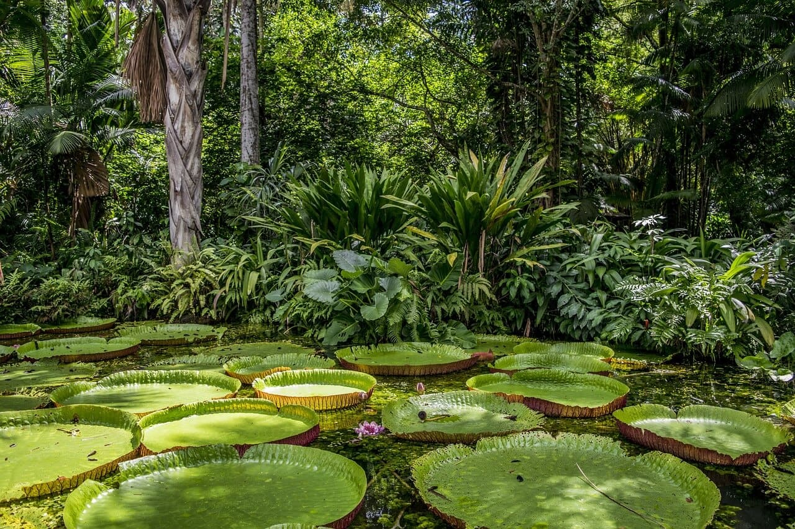

A preservação das florestas é uma questão urgente e vital para o futuro do nosso planeta, neste artigo, exploraremos as ações transformadoras que podem fazer a diferença na proteção dos ecossistemas florestais, com a conscientização e o engajamento de governos, organizações e indivíduos, é possível construir um futuro sustentável, onde as florestas sejam preservadas e valorizadas como elementos essenciais para a vida na Terra.
As florestas desempenham um papel fundamental na manutenção do equilíbrio ambiental, elas são verdadeiros tesouros de biodiversidade, abrigando milhões de espécies vegetais e animais, muitas das quais ainda desconhecidas pela ciência, além disso, as florestas desempenham um papel crucial na regulação do clima global, capturando e armazenando dióxido de carbono, um dos principais responsáveis pelo aquecimento global.
Contudo, as florestas enfrentam uma série de ameaças, como o desmatamento desenfreado, a exploração madeireira ilegal, a expansão agrícola e a urbanização desordenada, essas atividades humanas têm causado a perda alarmante de áreas florestais em todo o mundo, resultando em impactos negativos no clima, na biodiversidade e nas comunidades que dependem desses ecossistemas.
Diante desse cenário preocupante, é fundamental adotar ações transformadoras que promovam a preservação das florestas, abaixo, destacamos algumas medidas essenciais:
A educação ambiental desempenha um papel fundamental na conscientização e no engajamento da sociedade em relação à preservação das florestas, é necessário promover programas educacionais que abordem a importância das florestas, os impactos do desmatamento e as práticas sustentáveis de uso dos recursos florestais, dessa forma, as pessoas estarão mais aptas a tomar decisões responsáveis e a exigir ações efetivas de conservação.
A criação e o fortalecimento de leis ambientais são fundamentais para garantir a proteção das florestas, é necessário que os governos implementem medidas eficazes de combate ao desmatamento ilegal, punindo os infratores e promovendo a regularização ambiental, além disso, é essencial investir na fiscalização e no monitoramento das áreas florestais, a fim de coibir práticas ilegais e garantir o cumprimento da legislação ambiental.
Uma maneira eficiente de preservar as florestas é por meio do incentivo à economia florestal sustentável, É possível conciliar a conservação com o uso responsável dos recursos naturais presentes nas florestas, por meio de atividades como o manejo florestal sustentável, a exploração de produtos não madeireiros e o ecoturismo, essas práticas garantem a geração de renda para as comunidades locais e a preservação dos ecossistemas florestais.
A restauração de áreas degradadas é uma ação fundamental para a preservação das florestas, a recuperação de áreas desmatadas ou degradadas permite a regeneração dos ecossistemas, a proteção da biodiversidade e a recuperação dos serviços ecossistêmicos. É necessário investir em programas de reflorestamento, incentivando a plantação de árvores nativas e a recuperação de áreas degradadas, visando a restauração da cobertura florestal.
A preservação das florestas requer o envolvimento e a colaboração de governos, organizações não governamentais e sociedade civil, é necessário estabelecer parcerias e promover ações conjuntas para enfrentar os desafios relacionados à proteção das florestas, o diálogo entre os setores público e privado, a troca de conhecimentos e a cooperação são essenciais para desenvolver soluções sustentáveis e efetivas.
A preservação das florestas é uma causa urgente que exige ações transformadoras, as florestas são ecossistemas valiosos e insubstituíveis, que desempenham um papel crucial na manutenção do equilíbrio ambiental, para transformar o mundo e garantir um futuro sustentável, é necessário priorizar a preservação das florestas, adotando medidas como a educação ambiental, o fortalecimento da legislação, o incentivo à economia florestal sustentável, a restauração de áreas degradadas e a promoção de parcerias entre governos e sociedade civil, cada ação individual e coletiva conta e pode fazer a diferença na proteção das florestas e na construção de um planeta mais equilibrado e saudável para as gerações futuras.